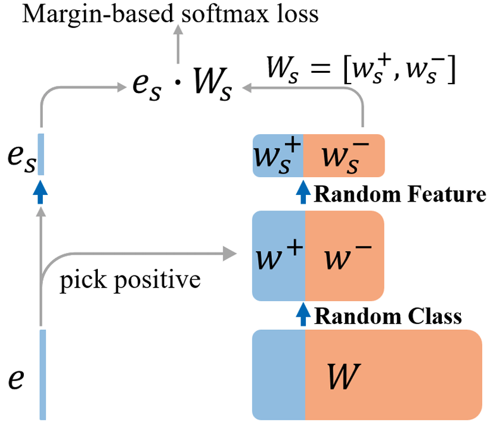
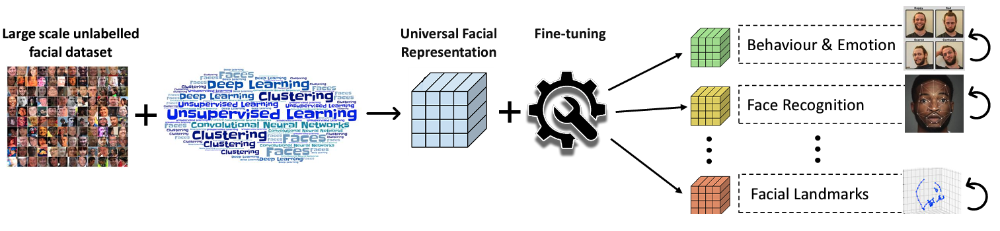

|
Jing Yang I am a Research Associate at Core LAB at University of Cambridge, where I work on GenAI with Prof. Cengiz Öztireli. Before that, I received a PHD from the University of Nottingham under the supervision of Prof. Georgios (Yorgos) Tzimiropoulos. |
{kind=link}
Research (selected publications)I am interested in many areas of Computer Vision - my research focuses on deep face analysis and model compression. Recently, I have been exploring the intersection of 3D Computer Vision, Computer Graphics and Generative Models. |

|
ALIP: Adaptive Language-Image Pre-training with Synthetic Caption
Kaicheng Yang, Jiankang Deng, Xiang An, Jiawei Li, Ziyong Feng, Jia Guo, Jing Yang, Tongliang Liu ICCV, 2023 paper / code |

|
Toward Robust Facial Action Units’ Detection
Jing Yang, Yordan Hristov, Jie Shen, Yiming Lin, Maja Pantic Proceedings of the IEEE, 2023 paper / code |
|
FAN-Trans: Online Knowledge Distillation for Facial Action Unit
Detection
Jing Yang, Jie Shen, Yiming Lin, Yordan Hristov, Maja Pantic WACV, 2023 paper / code |
|  |
Unicom: Universal and Compact Representation Learning for Image
Retrieval
Xiang An, Jiankang Deng, Kaicheng Yang, Ziyong Feng, Jia Guo, Jing Yang, Tongliang Liu ICLR, 2023 paper / code |
|  |
Pre-training strategies and datasets for facial representation
learning
Adrian Bulat, Shiyang Cheng, Jing Yang, Andrew Garbett, Enrique Sanchez, Georgios Tzimiropoulos ECCV, 2022 paper / code |
|
Knowledge distillation via softmax regression representation
learning
Jing Yang, Adrian Bulat, Brais Martinez Georgios Tzimiropoulos ICLR, 2021 paper / code /extention |
|
FAN-Face: a Simple Orthogonal Improvement to Deep Face Recognition
learning
Jing Yang, Adrian Bulat, Georgios Tzimiropoulos AAAI, 2020 paper |
|
Training binary neural networks with real-to-binary convolutions
Brais Martinez Jing Yang, Adrian Bulat, Georgios Tzimiropoulos ICLR, 2020 paper / code |
|
To learn image super-resolution, use a GAN to learn how to do image
degradation first
Adrian Bulat*, Jing Yang*, Georgios Tzimiropoulos ECCV, 2018,*Equal contribution paper / code |
| Website inspired by Jon Barron. |